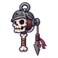
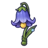
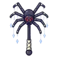

เห็ดพองลม
มอนธาตุพิษ Lv 38–46
เจอที่
| แมพ | โซน | Lv | ภูมิภาค |
|---|---|---|---|
| ป่าเห็ดชั้นใน | 38–46 | ป่ากองไฟ | |
| ป่าเห็ดชั้นใน | วงเห็ดลึก | 44–46 | ป่ากองไฟ |
| หุบสปอร์ม่วง | 38–46 | ป่ากองไฟ | |
| สระรากเห็ดเรืองแสง | 38–46 | ป่ากองไฟ | |
| สระรากเห็ดเรืองแสง | ม่านใยเห็ด | 44–46 | ป่ากองไฟ |
| หอรากมืด (Dark Root) | โพรงเห็ดเรือง | 14–23 |
ค่าสถานะตามเลเวล
| Lv | HP | ATK | DEF | MDEF | EXP | Job |
|---|---|---|---|---|---|---|
| 38 | 3,640 | 76–114 | 9 | 7 | 47 | 35 |
| 42 | 4,811 | 87–130 | 10 | 8 | 51 | 38 |
| 46 | 6,246 | 94–142 | 11 | 8 | 55 | 41 |
ตีด้วยธาตุไหนดี
แรงขึ้น: —
เบาลง: มืด ×0.5 อมตะ ×0.5 พิษ ×0
วัตถุดิบที่ดรอป
| ของ | โอกาส | |
|---|---|---|
| สปอร์เห็ดพอง | 55% | 1 ชิ้น (15% ได้ 2) |
อุปกรณ์ที่ดรอป (6)
| ของ | โอกาส |
|---|---|
 ด้ายเหล็กกะโหลกทหาร | 0.25% |
| ชุดวุ้นสไลม์ (เสื้อ) | 0.15% |
| ชุดวุ้นสไลม์ (กางเกง + รองเท้า) | 0.15% |
 กระดิ่งวิญญาณดอกบลูเบลล์ | 0.12% |
 ไม้เชิดหุ่นแมงมุมถ้ำ | 0.06% |
| ชุดวุ้นสไลม์ (แหวนวุ้น) | 0.05% |
สกิล
กระโจน (Lv 25+) · กระโจน (Lv 60+)